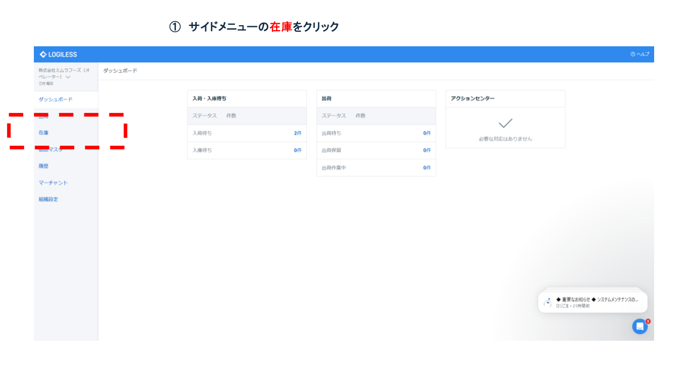
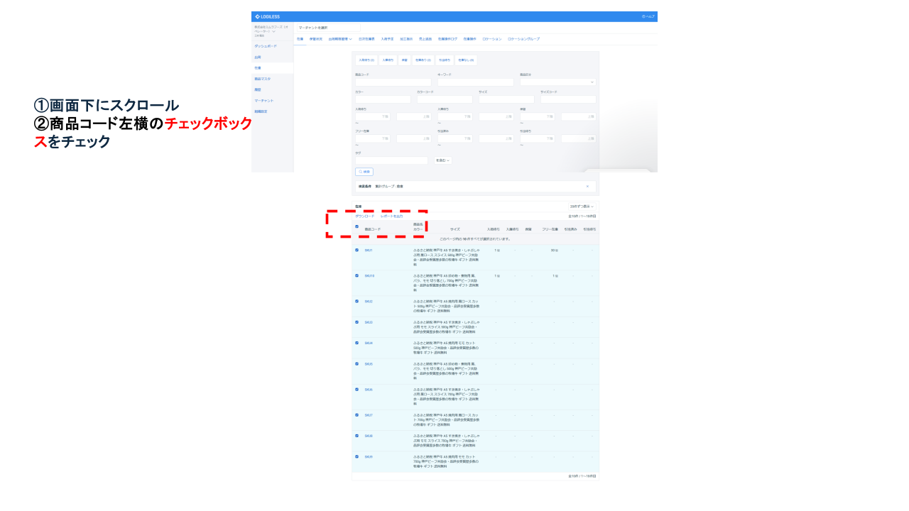
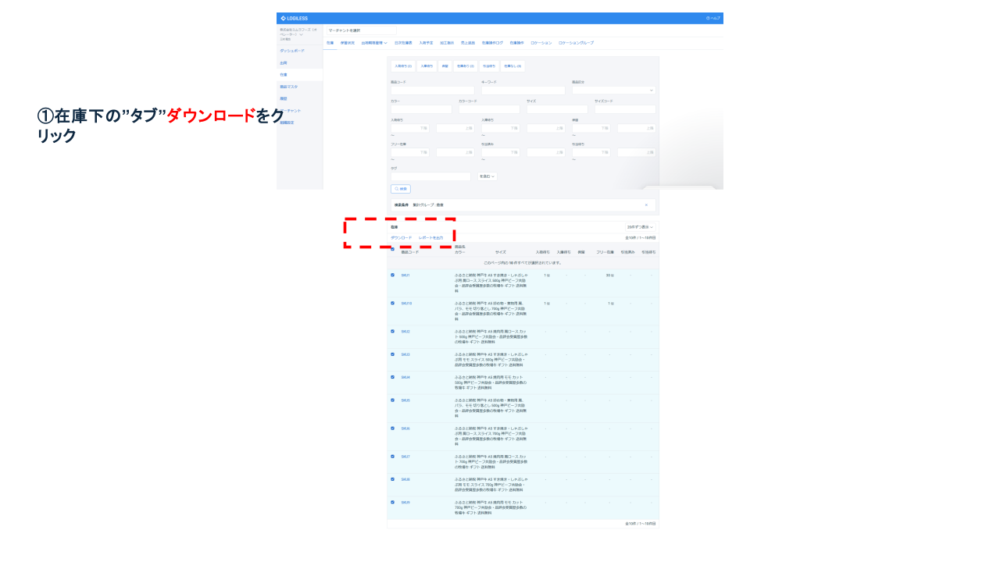
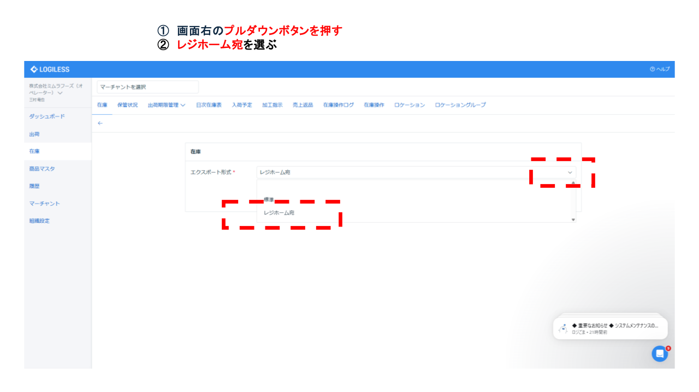
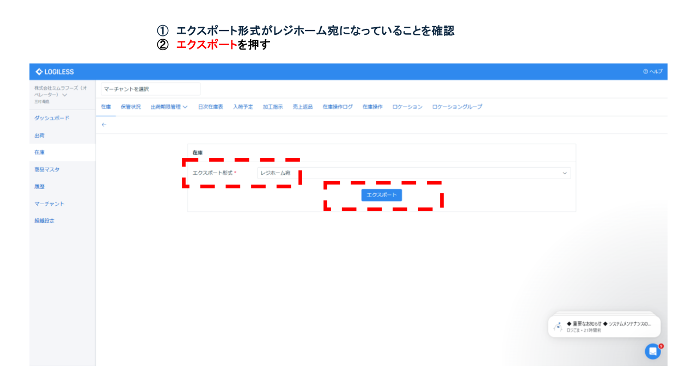

1. 使用ツールにログイン
ロジレスにログイン

在庫の最新情報を社外の関係者に共有する業務。主に受注可否判断や出荷計画立案に必要な情報を正確・迅速に伝達する。
共有内容には、謝礼品番号、謝礼品名、在庫数（残高）が含まれる。
| 項目 | 内容 |
|---|---|
| システム名 | LOGILESS（在庫管理システム） |
| ログインURL | https://app.logiless.com/ |
| ユーザーID | mimurafoods@googlegroups.com |
| パスワード | Mimura20250712 |
| 項目 | 内容 |
|---|---|
| システム名 | メール |
| 相手先名 | 加古川市ふるさと納税サポート室 |
| メールアドレス | support@kakogawa.furusato-lg.jp |
※ログイン情報は最新版をIT管理者に確認。外部公開時はマスキング。
ロジレスにログイン
オペレータータブを選択して、「株式会社ミムラフーヅ（オペレーター）」をクリック

サイドメニューの「在庫」をクリック
メイン画面下にスクロールして、在庫から商品コード左横のチェックボックスを選択（すべてのSKUがチェックされます）
在庫一覧のタブ「ダウンロード」をクリック
画面右のプルダウンボタンを押して「レジホーム宛て」のファイルフォーマットを選択する
エクスポート形式に「レジホーム宛て」が選ばれていることを確認して「エクスポート」ボタンを押す
ダウンロードされたCSVファイルを確認して、メールに添付して「加古川市ふるさと納税サポート室」に送信
※メールアドレスは「ログイン情報・接続先」を参照
| R（実行） | A（責任） | C（相談） | I（共有） |
|---|---|---|---|
| 入庫・出荷担当 | 商品管理責任者 | 商品管理担当 | 加古川市ふるさと納税サポート室 |